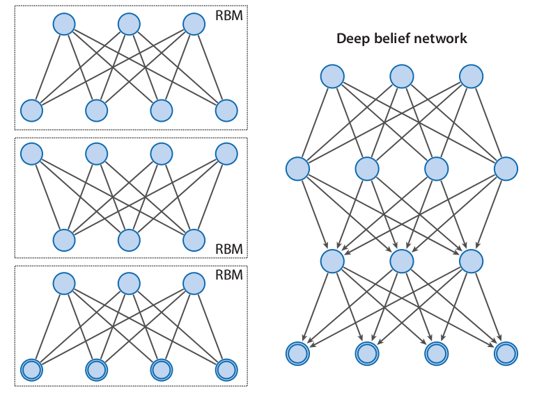

Machine Learning and Neural Networks
Roberto Santana and Unai Garciarena
Department of Computer Science and Artificial Intelligence
University of the Basque Country
Deep Neural Networks: Table of Contents
Course objectives
Objectives
- Enable the student to understand, develop, and implement models and algorithms capable of autonomously learning.
- Present the main paradigms of machine learning approaches and the classes of problems where they can be applied.
- Teach machine learning methods based on neural networks.
- Introduce the most relevant types of neural networks, explaining the rationale behind their conception and scope of application.
- Introduce and show how to implement deep neural networks.
- Cover real-world applications of deep neural networks and hot topics in this area.
Deep neural networks
Characteristics
- Are composed of multiple processing layers to learn representations of data with multiple levels of abstraction.
- Once the architecture has been defined, they require very little engineering by hand.
- Exploit the property that many natural signals are compositional hierarchies, in which higher-level features are obtained by composing lower-level ones.
- Good features can be learned automatically using a general-purpose learning procedure.
- They heavily depend on local optimization methods to tune their parameters.
Deep neural networks
Goals
- Automatically discover problem representations of different complexity from the lowest level features to highest level concepts.
- Being able to scale to very large problems.
- Allow multi-task solving by re-using modular components of the network.
- Be robust to different transformations of the original training data.
Deep Neural Networks
Deep network architecture
- Composed of multiple levels of non-linear operations
- As a model they integrate the steps of feature selection and feature understanding.
- Can learn decomposable representations of complex patterns into simpler patterns.
- They are organized as hierarchical features, from simpler patterns in the initial layers to more complex patterns in subsequent layers.
Shallow neural networks
- A shallow network has less number of hidden layers.
- The number of parameters required to fit a function should be in general higher.
- They are usually very homogeneous in terms of the activation functions they use.
R. Salakhutdinov. Learning deep generative models. Annual Review of Statistics and Its Application. Vol. 2. Pp. 361-385. 2015.
Deep Neural Networks
Shallow and Deep Neural Networks
-

R. Salakhutdinov. Learning deep generative models. Annual Review of Statistics and Its Application. Vol. 2. Pp. 361-385. 2015.
Deep Neural Networks
Multiple layers

VGG in TensorFlow. 2016.
Components
- Structure: Characterized by a combination of:
- Layers.
- Activation functions.
- Loss functions.
- Layers: Neurons organization. Fully connected, recurrent, dropouts, convolutional and pooling.
- Activation functions: Whether and how the neuron is activated.
- Sigmoid, ReLU, ELU, Leaky ELU, etc.
- Loss functions: Specifies how to evaluate the quality of NN model. Mean square error, cross-entropy loss, etc.
Activation Functions
Sigmoid linear unit
- One of the most widely used activation functions today.
- \( f(x) = \frac{1}{1+e^{-x}} \)
- It is nonlinear in nature.
- The output of the activation function is always going to be in range \((0,1) \).
- It has the problem of the vanishing gradients.
Activation Functions

tanh
- \( f(x) = \frac{2}{1-e^{-2x}} \)
- It is similar to the sigmoid function.
- Squashes numbers to range [-1,1].
- It is zero centered.
- It destroys information about the gradient when it is saturated.
- The gradient is stronger for tanh than sigmoid (derivatives are steeper).
Activation Functions
Rectifier linear unit (ReLU)
- \(f(x) = max(0,x) \)
- More biologically plausible.
- It is nonlinear in nature.
- Converges much faster than other functions, e.g., sigmoid and tanh.
- Computationally efficient
- The gradient can get toward zero.
Deep neural networks
Types of DNNs
- Convolutional Neural Networks (CNN).
- Recurrent Neural Networks (RNNs) and LSTM.
- AutoEncoders (AEs).
- Generative Adversarial Networks (GAN).
- Deep Belief Nets (DBNs).
- Deep Boltzmann Machines (DBMs).
H. Wang, B. Raj, and E. P. Xing.On the Origin of Deep Learning. arXiv preprint arXiv:1702.07800. 2017.
Convolutional Neural Networks
Network architecture

Characteristics
- Used for image classification.
- Based on the idea of convolutions.
- Can use as input multi-channel inputs (e.g. images in the three color channels).
- In most of the layers the neurons are not fully connected.
- Require a large dataset for training.
- There is a high variety of architectures.
Convolutional Neural Networks

- The convolutional network contains convolutional layers, maxpooling layers, and fully connected layers.
- The final output of the network is the classification of the image.
Figure: A. Deshpande A Beginner's Guide To Understanding Convolutional Neural Networks.
Convolutions
Filter
Original image
Convolutions
Convolved image
Original image
Convolutions
Filter
Original image
Convolutions
Convolved image
Original image
Convolutions
Filter for horizontal lines
Characteristics
- A Filter, also known as kernel or mask, is a matrix that is used to modify another reference larger matrix (usually representing an image).
- The filter is passed over the image spatially, computing dot products and this operation is called a convolution.
- The convolution is performed over all spatial locations.
- Different filters can produce different effects in the images and therefore they are usually applied for shaperning or blurring the original image.
Convolutions
Filter for vertical lines
Convolution formula
- \( f_{i,j} \) is the coefficient of a convolution kernel at position \(i,j\) (relative to the kernel).
- \( d_{i,j} \) is the data value of the pixel that corresponds to \(f_{i,j} \).
- \( q \) is the dimension of the kernel.
- \( F \) is the sum of the coefficients of the kernel, or 1 if the sum of coefficients is 0.
- \( V \) is the output pixel value (an integer).
\[ v = \left | \frac{\sum_{i=1}^{q}\sum_{j=1}^{q} f_{i,j}d_{i,j}}{F} \right | \]
Convolutions

Convolutions

M. D. Zeiler and R. Fergus Visualizing and Understanding Convolutional Networks. In European conference on computer vision. Pp. 818-833. Springer, Cham. 2014.
Convolutional layer
Concepts
- Filter: It is a small image the size of the receptive field that store the weights. It is also called kernel.
- Stride: It is the amount by which the filter shifts is the layer. Used to control the overlap between the receptive fields.
- Padding: Additional columns or rows added to the layer to preserve as much information about the original layer as possible.
- Commonly applied zero padding pads the input volume with zeros around the border.
Characteristics
- Neurons in this layer are only connected to a small region of units in the previous layer (inputs or previous layer neurons).
- Receptive field: The region in the input space that a particular neuron of a convolutional layer is looking at (i.e., process information from.)
- A receptive field of a feature can be fully described by its center location and its size.
Convolutional layer: Strides and Padding
V. Dumoulin and F. Visin. A guide to convolution arithmetic for deep learning. arXiv preprint arXiv:1603.07285. 2016.
Convolutional layer
Characteristics
- Local receptive fields.
- Share weights.
- Each input modality forms a different channel.
- The type of padding.
Hyperparameters of a convolutional layer
- Size of the filters.
- Number of filters (controls the depth of the output volume).
- The stride.
- The type of padding.
LeNet: A simple convolutional network
Y. LeCun et al. Gradient-based learning applied to document recognition. Proceedings of the IEEE 86.11. Pp. 2278-2324. 1998.
Convolutional layer
Convolution arithmetics
- \( o \): size of the (square) output image.
- \( i \): size of the (square) input image.
- \( p \): number of padded pixels.
- \( s \): stride.
\[ o = \left \lfloor \frac{i+p-k}{s} \right \rfloor + 1 \]
Concepts
- Filter: It is a small image the size of the receptive field that store the weights. It is also called kernel.
- Stride: It is the amount by which the filter shifts is the layer. Used to control the overlap between the receptive fields.
- Padding: Additional columns or rows added to the layer to preserve as much information about the original layer as possible.
- Commonly applied zero padding pads the input volume with zeros around the border.
Convolutional Neural Networks: Pooling layer
- The convolutional network contains convolutional layers, maxpooling layers, and fully connected layers.
- The final output of the network is the classification of the image.
Figure: A. Deshpande A Beginner's Guide To Understanding Convolutional Neural Networks.
Pooling
Max pooling

Characteristics
- The goal of the pooling layer is to subsample (i.e. shrink) the input image in order to reduce the computational load, the memory usage, and the number of parameters.
- As in the convolutional layer, each neuron is connected to a limited number of neurons in the previous layer.
- However, in the pooling layer there are not weights.
- The pooling layer computes one single statistic from a set of neurons from the previous layer.
- Usually, the max-value of a set of adjacent neurons is computed and the operation is known as max-pooling.
Pooling
Max pooling
Characteristics
- The output of the max-pooling neurons are invariant to small shifts in the inputs.
- This property is known as translational invariance.
- In general, the pooling channel works on every input channel independently. Therefore the output deph is the same as the input depth.
- The size of the receptive field, the stride, and the padding type are also parameters of the pooling layer.
Convolutional Neural Networks: Fully connected layers
- The convolutional network contains convolutional layers, maxpooling layers, and fully connected layers.
- The final output of the network is the classification of the image.
Figure: A. Deshpande A Beginner's Guide To Understanding Convolutional Neural Networks.
Fully connected layers
Network architecture

Characteristics
- The last components of a CNN are a feedforward NN composed of a few fully connected layers (+ReLUs).
- The final layer ouputs the prediction. Usually, a softmax layer that outputs the probabilities for each class.
- The number of classes can be huge, e.g. 1000 classes.
Interpreting network architectures: LeNet-5
| Layer | Type | Maps | Size | Kernel size | Stride | Activation |
|---|---|---|---|---|---|---|
| Out | Fully Connected | - | 10 | - | - | RBF |
| F6 | Fully Connected | - | 84 | - | - | tanh |
| C5 | Convolution | 120 | 1x1 | 5x5 | 1 | tanh |
| S4 | Avg. Pooling | 16 | 5x5 | 2x2 | 2 | tanh |
| C3 | Convolution | 16 | 10x10 | 5x5 | 1 | tanh |
| S2 | Avg. Pooling | 6 | 14x14 | 2x2 | 2 | tanh |
| C1 | Convolution | 6 | 28x28 | 5x5 | 1 | tanh |
| In | Input | 1 | 32x32 | - | - | - |
Y. LeCun, L. Bottou, Y. Bengio, and P. Haffner. Gradient-based learning applied to document recognition. Proceedings of the IEEE. 1998.
Data augmentation methods
Methods
- Image translations: e.g. random shift sampled uniformly between -4 and 4 pixels in the x and y direction.
- Flipping: The image is flipped with a probability of 0.5.
- Scaling: random rescaling with a scale factor.
- Rotation: Random rotation with an angle sampled uniformly between 0 and 360.
- Brightness adjustment: The colour of the image is adjusted.
- Horizontal reflections and patch extractions
Goal
- Approaches that modify the training data in ways that change the input representation while keeping the label the same.
- It is an easy way to increase the size of the training data.
- Augmentation can be seen as a way of adding prior knowledge.
- It can also be seen as a way to decrease the generalization error (i.e, as a regularization technique).
Dropout
- Dropout: At every training step, every neuron (including input neurons but excluding output neurons) has a probability \(p\) of being entirely ignored during the training step.
N. Srivastava et al. Dropout: a simple way to prevent neural networks from overfitting.Journal of machine learning research. Vol. 15 No. 1. Pp. 1929--1958. 2014.
Dropout
Applications
- It generally produces an important accuracy boost to the the CNNs.
- It can be applied to other classes of DNNs.
- It is considered a regularization method since neurons end up being less sensitive to slight changes in the inputs.
Characteristics
- The parameter \(p\) is called the dropout rate and it is typically set to \(50\% \).
- After training, neurons don't get dropped anymore.
- Neurons trained with dropout cannot co-adapt with their neighboring neurons. They have to rely on themselves.
- They also cannot rely excessively on just a few input neurons. They must pay attention to each of their input neurons.
A. Geron. Hands-On Machine Learning with Scikit-Learn and TensorFlow. Concepts, Tools, and Techniques to Build Intelligent Systems. O'Reilly. 2017.
Using pretrained networks
Applications
- It helps to learn faster.
- It is particularly useful when there commonalities between the problem domains.
- Highly accurate models could be used for fine tuning, e.g. ResNet, VGG, etc.
Characteristics
- The first layers of a convolutional neural net ( convolutional base) contain information reusable across problems since they detect patterns like lines and edges.
- Replace the classification layer with a new layer randomly initialized.
- Finetune the last layers using the specific data of the problem.
A. Geron. Hands-On Machine Learning with Scikit-Learn and TensorFlow. Concepts, Tools, and Techniques to Build Intelligent Systems. O'Reilly. 2017.
CNN Architectures
P. Eckersley and Y. Nasser. AI Progress Measurement. Measuring the Progress of AI Research. Accessed 2017.
CNN Architectures
A. Canziani, A. Paszke, E. Culurciello. An Analysis of Deep Neural Network Models for Practical Applications. arXiv:1605.07678v4. 2017.
CNN architectures
From 2014
- (2014) VGGNet: Uses only 3x3 convolutional layers stacked on top of each other in increasing depth.
- (2014) GoogLeNet: Includes an Inception Module that reduces number of parameters in the network .
- (2015) ResNets: Residual Net. Winner of ILSVRC 2015.
- (2016) DenseNet: Densely Connected Convolutional Network has each layer directly connected to every other layer in a feed-forward fashion.
Until 2014
- (1990) LeNet: Originally designed for handwritten and machine-printed character recognition. It served as an inspiration for further developments to CNNs.
- (2012) AlexNet: Formed by 5 convolutional layers, max-pooling layers, dropout layers, and 3 fully connected layers. Winner of of ILSVRC 2012.
- (2013) ZFNet: Similar to AlexNet with a more sensible choice of its hyperparameters. Winner of of ILSVRC 2012.
Inception module

- It does the parallel applications of different filters.
Figure: A. Deshpande A Beginner's Guide To Understanding Convolutional Neural Networks.
Inception module

AlexNet

- It won the ImageNet Large-Scale Visual Recognition Challenge (ILSVRC) in 2012 with a 15.4% top-5 error (next competitor was 26.2%).
A. Krizhevsky, I. Sutskever and G. E. Hinton. Imagenet classification with deep convolutional neural networks. In Advances in Neural Information Processing Systems. Pp. 1097-1105. 2012.
AlexNet
- 5 convolutional layers, max-pooling layers, dropout layers, and 3 fully connected layers.
- Used the ReLU activation function, dropout layers, data augmentation techniques, and Stochastic gradient descent to optimize the parameters.
A. Krizhevsky, I. Sutskever and G. E. Hinton. Imagenet classification with deep convolutional neural networks. In Advances in Neural Information Processing Systems. Pp. 1097-1105. 2012.
Interpreting network architectures: AlexNet
| Layer | Type | Maps | Size | Kernel size | Stride | Padding | Activation |
|---|---|---|---|---|---|---|---|
| Out | Fully Connected | - | 1000 | - | - | - | Softmax |
| F9 | Fully Connected | - | 4096 | - | - | - | ReLu |
| F8 | Fully Connected | - | 4096 | - | - | - | ReLu |
| C7 | Convolution | 256 | 13x13 | 3x3 | 1 | SAME | ReLU |
| C6 | Convolution | 384 | 13x13 | 3x3 | 1 | ? | ReLU |
| C5 | Convolution | 384 | 13x13 | 3x3 | 1 | SAME | ReLU |
| S4 | Max. Pooling | 256 | 13x13 | 3x3 | 2 | VALID | - |
| C3 | Convolution | 256 | ? | 5x5 | 1 | SAME | ReLU |
| S2 | Max. Pooling | 96 | 27x27 | 3x3 | 2 | VALID | - |
| C1 | Convolution | 96 | ? | 11x11 | 4 | SAME | ReLU |
| In | Input | 3(RGB) | 224x224 | - | - | - | - |
A. Krizhevsky, I. Sutskever and G. E. Hinton. Imagenet classification with deep convolutional neural networks. In Advances in Neural Information Processing Systems. Pp. 1097-1105. 2012.
U-net for image segmentation

- U-net is a CNN for segmentation of images.
- It has two components. A contracting path and an expansive path.
A. Krizhevsky, I. Sutskever and G. E. Hinton. Imagenet classification with deep convolutional neural networks. In Advances in Neural Information Processing Systems. Pp. 1097-1105. 2012.
U-net for image segmentation
- In the contracting path convolution blocks are followed by a maxpool blocks.
- In the expansive path , the higher resolution features from contracting path are concatenated with the upsampled features.
A. Krizhevsky, I. Sutskever and G. E. Hinton. Imagenet classification with deep convolutional neural networks. In Advances in Neural Information Processing Systems. Pp. 1097-1105. 2012.
CNN Architectures
P. Eckersley and Y. Nasser. AI Progress Measurement. Measuring the Progress of AI Research. Accessed 2017.
Deep neural networks
Applications
- Predicting the activity of potential drug molecules.
- Analyzing particle accerator data.
- Reconstructing brain circuits.
- Predicting the effects of mutations in non-coding DNA on gene expression and disease.
DNNs applications
- Object detection, speech recognition, and machine translation.
- Generate artistic images with different styles.
- Clustering patterns of gene expressions .
- Sentiment analysis fusioning different modalities.
H. Wang, B. Raj, and E. P. Xing. On the Origin of Deep Learning. arXiv preprint arXiv:1702.07800. 2017.
Y. LeCun, Y. Bengio, and G. Hinton. Deep learning. Nature 521.7553 (2015): 436-444. 2015.
Modelnet Dataset.
Object recognition and generating random shapes with consistent structure.
Wu et al. 3d shapenets: A deep representation for volumetric shapes.Proceedings of the IEEE Conference on Computer Vision and Pattern Recognition. Pp. 1912-1920. 2015.
Deep-learning models for Drug Discovery
H. Altae-Tran, B. Ramsundar, A. S. Pappu, and V. Pande Low data drug discovery with one-shot learning.ACS central science. Vol. 3. No. 4. 283. 2017.
Cancer nodule detectors from lung scans with a 3D convolutional NN
J. de Wit and D. Hammack 2nd place solution for the 2017 national datascience bowl. Kaggle Competition. 2017.
Cancer nodule detectors from lung scans with a 3D convolutional NN
J. de Wit and D. Hammack 2nd place solution for the 2017 national datascience bowl. Kaggle Competition. 2017.
Scene understanding
- An algorithm needs to report the top 1 most likely scene categories for each image.
- Millions of images for training. 10000 images for test.
- Ten categories were used for the challenge.
F. Yu. Large-scale Scene Understanding Challenge. 2016.
Scene understanding
- The best two teams accuracies over 0.90.
- The best four teams in the contest used Deep Learning Neural Networks.

F. Yu. Large-scale Scene Understanding Challenge. 2016.
Saliency Prediction
- An algorithm needs to predict where humans look in a scene.
- Datasets provided: iSUN (eye tracking based) and SALICON (mouse tracking based).
- 10,000 training images and 5,000 validation images with saliency annotations

M. Jiang, S. Huang, J. Duan, and Q. Zhao. Salicon: Saliency in context.In Proceedings of the IEEE Conference on Computer Vision and Pattern Recognition. Pp. 1072-1080. 2015.
Semantic Segmentation
- Object detection from images.
- More than 200,000 images and 80 object categories.
- Hierarchical and cascade approaches implementing a pipeline of ML methods.
Tsung-Yi Lin et al. Joint Workshop of the COCO and Places Challenges at ICCV 2017.
Neural Artistic Transfer
L. A. Gatys, A. S. Ecker, and M. Bethge. A Neural Algorithm of Artistic Style. arXiv preprint arXiv:1508.06576. 2015.